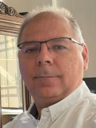
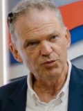
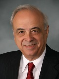

Повикани предавачи
Еврокод 1 - Климатски товари на конструкциите
Давор СКЕЈИЌ
Градежен факултет, Загребски универзитет, Хрватска
Повеќе

Напредни методи за проектирање на челични конструкции базирани на Еврокод 3
Милан СПРЕМИЌ
Градежен факултет, Универзитет во Белград, Србија
Повеќе

Новиот Еврокод 3 - Проектирање на челични конструции - Дел 1-1: Општи правила и правила за згради
Хартмут ПАСТЕРНАК
Брандербуршки универзитет за технологија, Котбус, Германија
Повеќе
Еволуцијата на Еврокод 8 - дел 3: Главни предизвици и клучни промени
Андреас КАПОС
Универзитет Калифа, Абу Даби, Обединети Арапски Емирати
ПовеќеПроектирање на бетонски конструкции согласно Еврокод 2 и ПБАБ 87: Споредба на основни пресметки
Ненад ПЕЦИЌ
Градежен факултет, Универзитет во Белград, Србија
Повеќе
Национална имплементација на MKS EN1998-1:2004 – статус и предизвици
Роберта Апостолска
Институт за земјотресно инженерство и инженерска сеизмологија, УКИМ, С.Македонија
Повеќе
Кон ерата на Еврокодовите - иден развој и втора генерација на Еврокод 7
Јосиф ЈОСИФОВСКИ
Градежен факултет - Скопје, УКИМ, С.Македонија
ПовеќеПроектирање на претходно напрегнати конструкции според Еврокод 2
Тони АРАНЃЕЛОВСКИ
Градежен факултет - Скопје, УКИМ, С.Македонија
Повеќе
